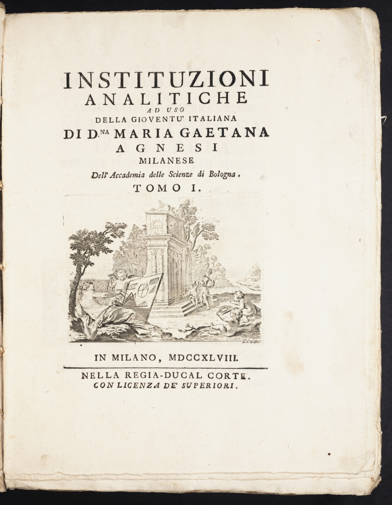
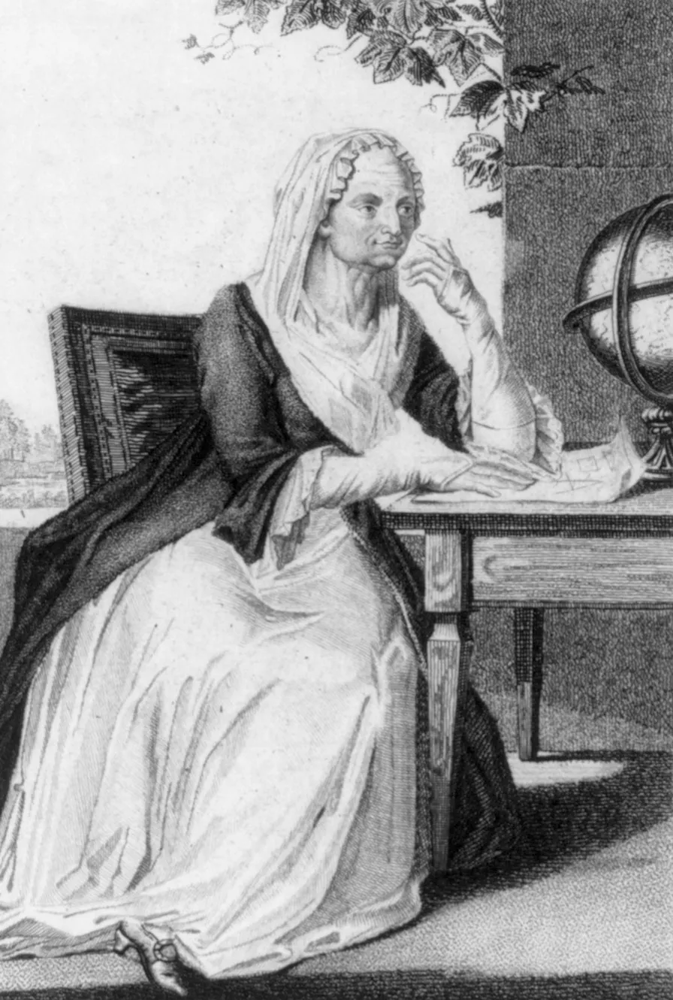

Maria was born in 1718 in Milan and died in 1799 also in Milan. She was from a rich family and she had 20 brothers and sisters.
Maria studied ballistics and geometry and was a member of the faculty at the University of Bologna. She was a mathematician, philosopher, theologian and humanitarian.
Context
In the 18th century womens did not have as many rights as they do now.
The womens living during the 18th century couldn't have a formal science instruction. Italian women were allowed to study at university in 1876. Maria was an exception.

Famous for
Maria is now really famous for her works. But what were her works ?
Maria is known for being the first women to write a mathematics handbook. In there they were analytical institutions for the use of italian youth, and also differential and integral calculus.
Her handbook was translated in french, german and english. Also, the Pape Benoit 14th read her book and appointed her as a professor in the university of Bologna.
This event made Maria the 1st women appointed as a mathematics professor at a university

Impact of her work
But with this handbook did Maria impact the world ?
Yes of course, this handbook propelled Maria to be considered the 1st woman in the western world to have achieved a reputation in mathematics.
Also, an asteroid and a crater on Venus both bears the name Agnesi.